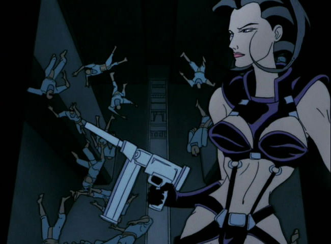
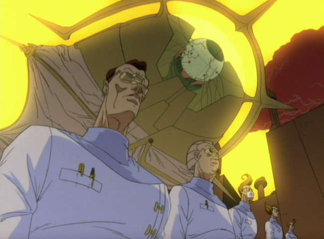
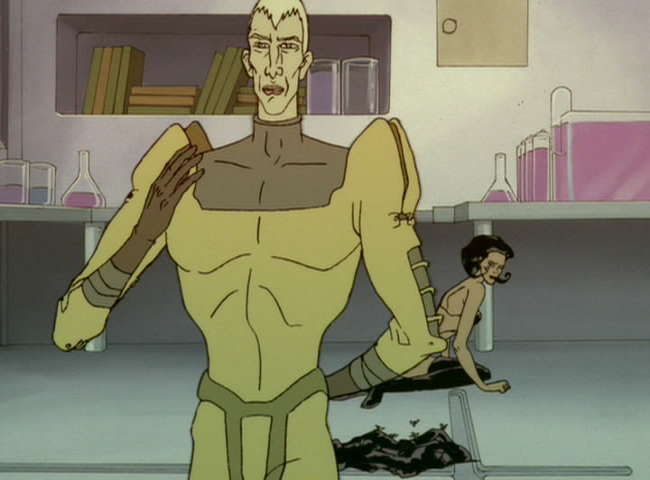
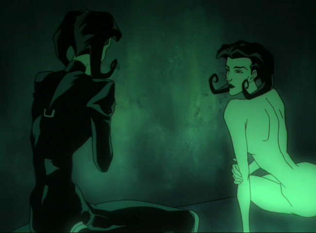
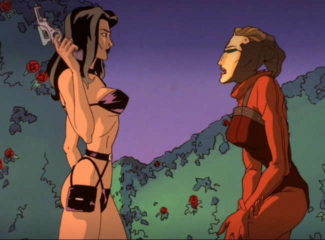
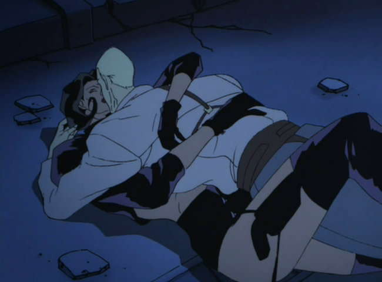
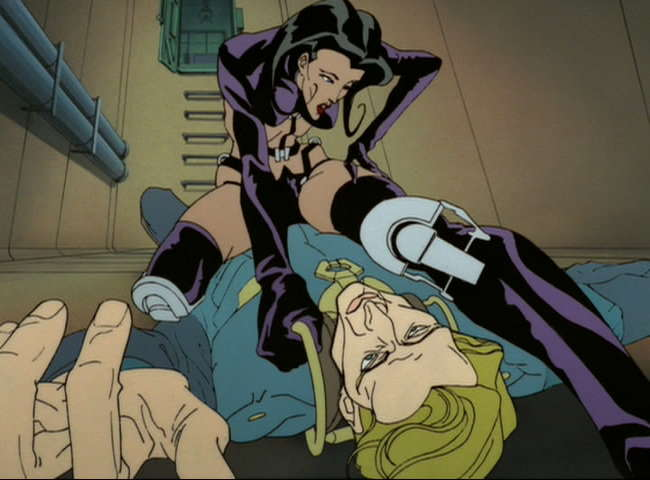
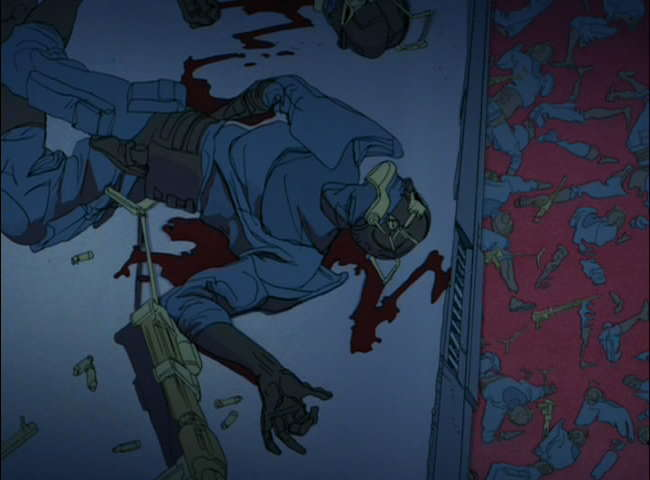
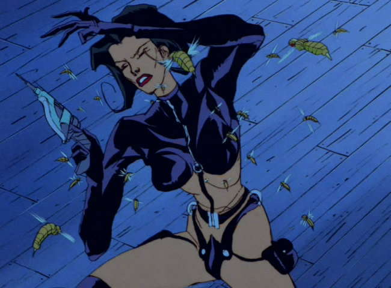
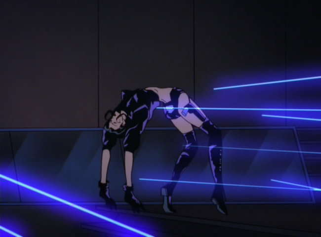

Movie review by : SFAM
Year : 1991
Directed by : Peter Chung & Howard Baker
Written by : Peter Chung et al.
Degree of Cyberpunk visuals : Very High
Correlation to Cyberpunk themes : High
Rating : 9/10
Key cast members :

Overview: Aeon-Flux, the brainchild of Peter Chung (also the writer/director of the terrific Animatrix short, "Matriculated"), is one of the really innovative and unique animated shows to come out of the United States. We really have to thank MTV for allowing this show to get produced, and then, after realizing that they just couldn't control it, for letting it go on unfettered for a second season. Aeon-Flux is not meant to be a coherent whole ? this postmodern cyberpunk show is as nihilistic as they come.

The Story: Aeon Flux takes place in a truly bizarre near-future setting, in which genetic engineering, body modifications, and excessive self-gratification are the norm ? yet these extremes take place in a controlled surveillance society. Nearly all events take place in the utopian city, Bregna, which is controlled by a supreme oligarchy. Trevor (voiced by Vampire Hunter D's John Rafter Lee), one of the two central characters, is a prototypical mad scientist who, at first seems to have little regard for anything other than his own perverted desires. As the show goes on, we find that he is in fact truly besotted with Aeon Flux, who, in many ways is his complete opposite. Aeon Flux (voiced by Denise Poirier) represents the forces of anarchy, and is continually involved in fucking up Trevor's carefully laid scheming. Unfortunately for Aeon, she too cannot resist Trevor's guile, which just as often, leads to her downfall.

Virtually every episode is different in Aeon Flux, but all of them deal with a strange, fast-paced plot that deals with espionage in some way. Episodes usually have the feel of a chess match, where Aeon and Trevor match wits over completely strange and esoteric plots. More often than not, nobody wins. In fact, unlike most shows, the winning and ending itself is rarely important. This is not what the shows are about. More important is the mood, the feel, and the atmosphere that exudes from the visuals, the dialogue and the score.

Spoiler ? Aeon Flux Dies... A lot! Well, OK, it's not really a spoiler. It's more a fact of the show itself. Unlike most shows, in this one, the star dies regularly. Early on in the long shows, Trevor clones Aeon Flux, so thematically, there is now an infinite number of Aeons just waiting to bite the big one. And while there's now a "rationale" for the deaths, this isn't really the point ? Aeon Flux isn't meant to hold together that way. It's almost as if each episode is completely it's own show. But if she dies, rest assured it will happen in a truly innovative and gruesome way. It could be drowning in a vat of poisen, getting dropped out of a plane, being eating by bizarre genetically modified creatures, or, well, you get the idea.

Aeon Flux ? the Ultimate Anti-heroine? In many ways, Aeon Flux comes across as the ultimate anti-heroine. While she clearly knows right from wrong, and generally tries to stop the worst abuses, Aeon is an ultra-acrobatic, top-notch action/espionage heroine who works for herself. She's just as likely to take an assassination job as she is to stop a horrid virus from killing mankind. Did I mention she's drawn up in ultra-hot, skimpy clothes, and likes to have sex a lot? In this way, she really does qualify as a more female than female character (usually cyberpunk reserves these for cyborgs and androids). Most interestingly, because of Aeon Flux's propensity for dying, you never know whether or not she's going to make it through alive, or even whether she'll complete her mission (she seems to fail almost as much as she succeeds). This really does add an excitement to the episodes.

The Love-Hate Relationship: Aeon-Flux and Trevor have a complete love-hate relationship. Even when they are bent on killing one-another, there is always sexual tension, which while often consummated, never leaves the two characters. Every episode gives us yet another chance to explore their relationship in a completely bizarre way. Trevor is definitely Aeon's Kryptonite. More often than not, his presence alone is enough to make her botch her mission. However, this doesn't stop Aeon from ruining most, if not all of Trevor's take over the world plots.

The Visuals and Cinematography: Aeon Flux gives a number of different looks as the show progresses. Perhaps my favorite are the perspective shots such as the one above. We also get lots of wide angle shots, strange close-ups, gradients, and a number of truly surrealistic sets. Unlike most cyberpunk, Aeon Flux doesn't really adhere to a single dominating color scheme ? but to the extent it does, the blues are more highlighted than the rest. Usually, each episode will have a unique theme that dictates the color choices ? often they will take a color palette (oranges, greens, etc.) and detail it out in interesting ways. Some episodes are truly surreal in nature, while others are straight neo-noir. The overall goal is always to innovatively create a far-out intense atmosphere wrapped up in a tightly paced, no-nonsense near-future espionage show. More often than not it succeeds.

The Violence: Much to MTV's initial chagrin, Aeon Flux is NOT a kids show. This is an adult cartoon in every way possible, including the intense violence. While the shorts are more violent than the half-hour episodes, Aeon Flux is consistently violent. There are leg amputations, deaths by gunshot, poison, insects, creatures, aliens, viruses, et cetera (often to Aeon herself!). Blood and gore are often just a scene or two away. All of this serves to strengthen the near-future but otherworldly atmosphere of Aeon Flux.

The Gadgets: Aeon-Flux is filled with gadgets of all flavors. Most common are body modifications and "biopunk" elements (just learned that word ? ). Body modifications include external spinal cord implants, leg jumping implants, conversions of limbs, eye implants, and various compartmentalized bodily storage areas. Genetic engineering is a huge theme in Aeon Flux, far more than the cyber-aspects. We also see repeated instances of cybernetically modified insects who's function is to inflict a virus of some kind into a target population (Now we know where DARPA got the idea from!). Needles are also a recurring them, and show up everywhere from guns, to security implements, to, um, the operating table.

The Bottom Line: Aeon Flux is one of the really creative shows to come out of United States Television. This show validates the purpose of cable TV ? we get to see talented folks like Peter Chung let lose their creative energies to produce something truly unique. And while I normally don't spend too much time talking about the DVD features, I must on Aeon-Flux ? the DVD set is flat-out terrific. I almost put it up there with Errol Flynn's Robin Hood and The Kino edition of Metropolis as one of my favorite DVD productions of a long-lost show. The commentaries, featurettes, and extras are all terrific on the Aeon Flux DVD. If I had any qualms about whether to give Aeon Flux 8 or 9 stars, the incredible quality of the DVD set answers it for me.